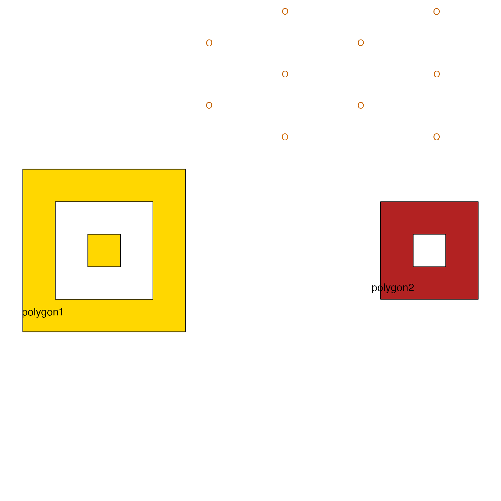

Arrange text labels inside a polygon
label_fill_JamPolygon(
jp,
labels,
buffer = -0.15,
relative = TRUE,
color = "black",
border = NA,
ref_jp = NULL,
xyratio = 1.1,
fontsize = 10,
cex = 1,
degrees = 0,
dither_cex = 0.04,
dither_color = 0.07,
dither_degrees = 0,
scale_width = -0.15,
apply_n_scale = TRUE,
buffer_w = 0,
buffer_h = 0,
label_method = c("hexagonal"),
layout_degrees = -20,
draw_buffer = FALSE,
buffer_fill = "#FFFFFF77",
buffer_border = "red",
draw_points = FALSE,
draw_labels = TRUE,
seed = 1,
plot_style = c("base", "gg", "none"),
verbose = FALSE,
...
)JamPolygon where only the first row is processed.
character vector of labels
This function is intended to define points inside a polygon area which are evenly spaced, used to place text labels also inside the polygon. There are limited options to define a buffer region so that labels do not overlap the polygon boundary.
Determine bounding box with rectangular area that encompases the polygon.
Define evenly spaced points across the rectangular area sufficient
to produce at least n total points.
Retain only the subset of points which are inside the polygon.
If there are fewer than n remaining points, repeat the process
using a higher target value for n.
Challenges:
polyclip::pointinpolygon() does not appear to handle polygons with
holes. If not, then we have to use logic like: "overlaps any solid polygon,
does not overlap any polygon hole".
Options:
Consider applying a buffer with fixed width inside the original polygon, so that points have at least this minimum width to the polygon border.
Bonus points for applying the buffer more to the width than height, since text labels are typically wider than they are tall.
Other JamPolygon:
JamPolygon-class,
Venndir-class,
add_orientation_JamPolygon(),
area_JamPolygon(),
bbox_JamPolygon(),
buffer_JamPolygon(),
check_JamPolygon(),
check_Venndir(),
eulerr_to_JamPolygon(),
farthest_point_JamPolygon(),
find_venn_overlaps_JamPolygon(),
has_point_in_JamPolygon(),
intersect_JamPolygon(),
label_outside_JamPolygon(),
label_segment_JamPolygon(),
labelr_JamPolygon(),
minus_JamPolygon(),
nearest_point_JamPolygon(),
plot,JamPolygon,missing-method,
plot.JamPolygon(),
point_in_JamPolygon(),
polyclip_to_JamPolygon(),
sample_JamPolygon(),
split_JamPolygon(),
union_JamPolygon(),
update_JamPolygon()
df3 <- data.frame(name=c("polygon1", "polygon2"),
label=c("polygon1", "polygon2"),
x=I(list(
list(c(1, 6, 6, 1),
c(2, 5, 5, 2),
c(3, 4, 4, 3)),
list(#c(11, 16, 16, 11),
c(12, 15, 15, 12),
c(13, 14, 14, 13))
)),
y=I(list(
list(c(1, 1, 6, 6),
c(2, 2, 5, 5),
c(3, 3, 4, 4)),
list(#c(1, 1, 6, 6),
c(2, 2, 5, 5),
c(3, 3, 4, 4))
)),
fill=c("gold", "firebrick"))
jp3 <- new("JamPolygon", polygons=df3);
plot(jp3);
label_fill_JamPolygon(jp3[1,], labels=1:20)

test_x <- jp3[1,]@polygons$x[[1]];
test_y <- jp3[1,]@polygons$y[[1]];
P <- list(x=c(3.5, 4.5), y=c(3.5, 4.5))
A <- lapply(seq_along(test_x), function(i){
list(x=test_x[[i]], y=test_y[[i]])})